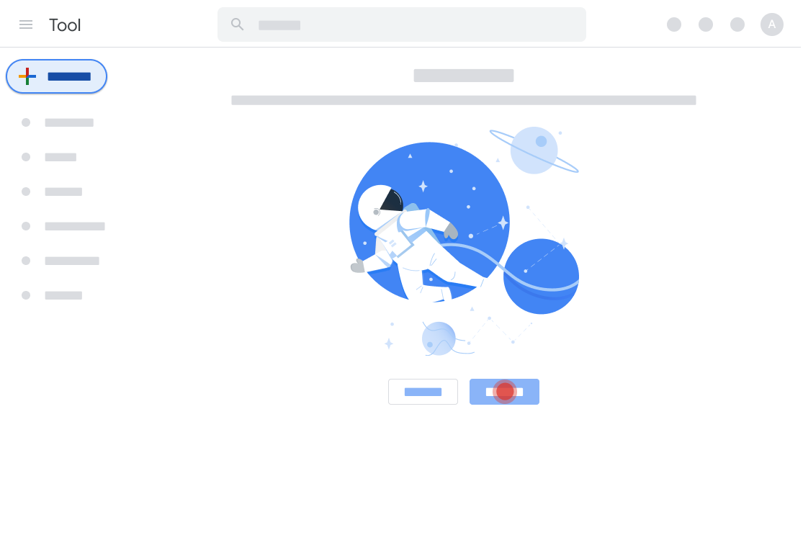
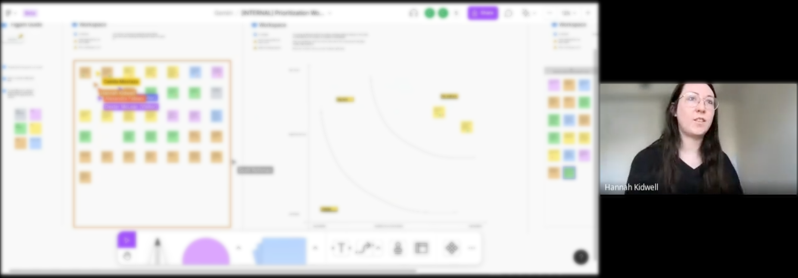
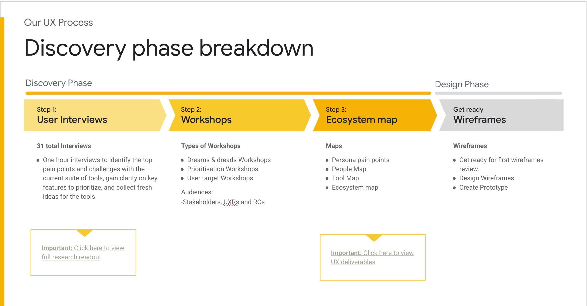
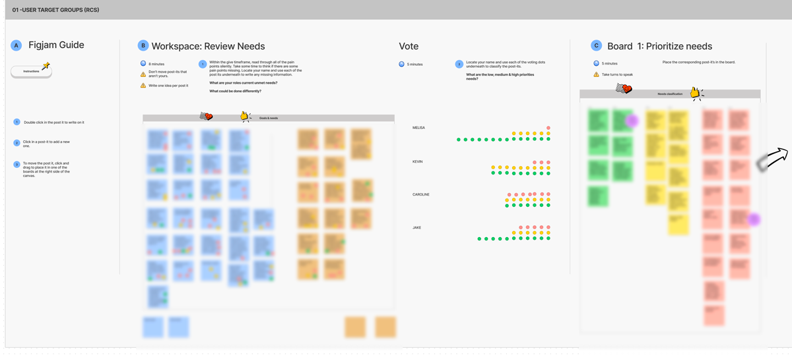
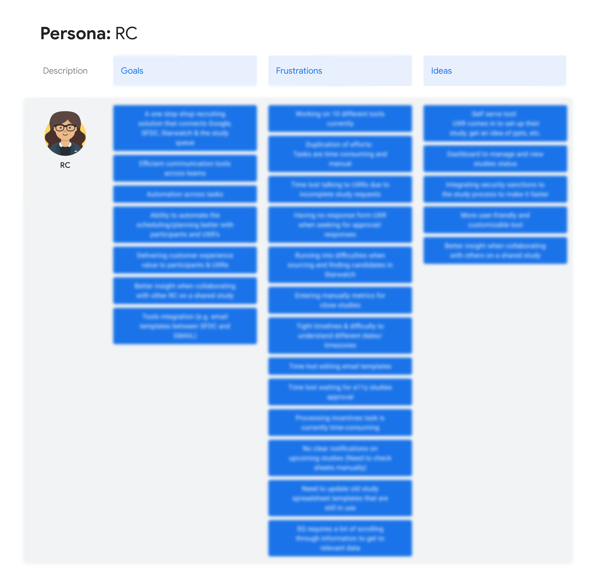
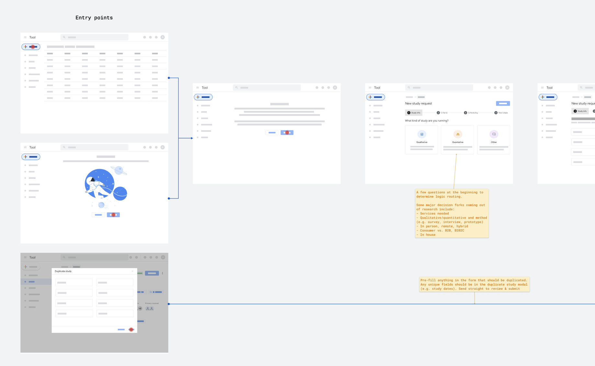
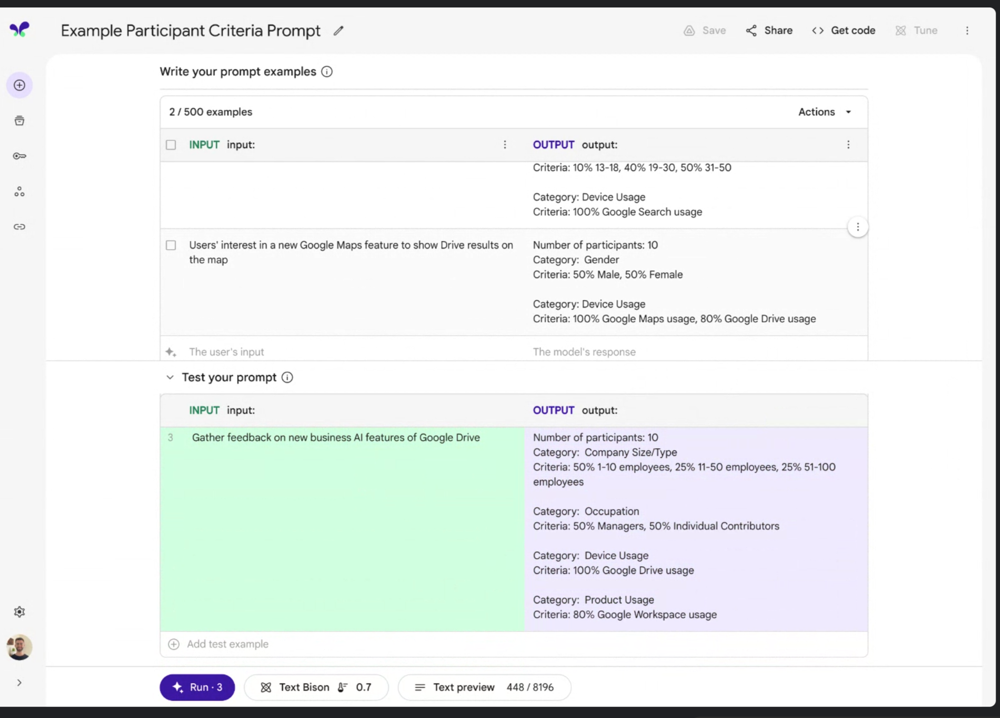
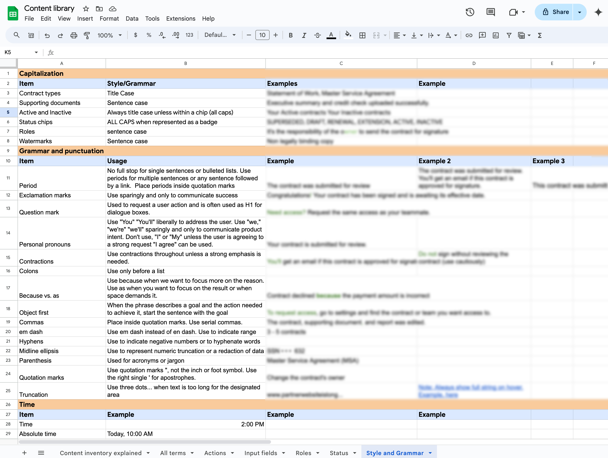
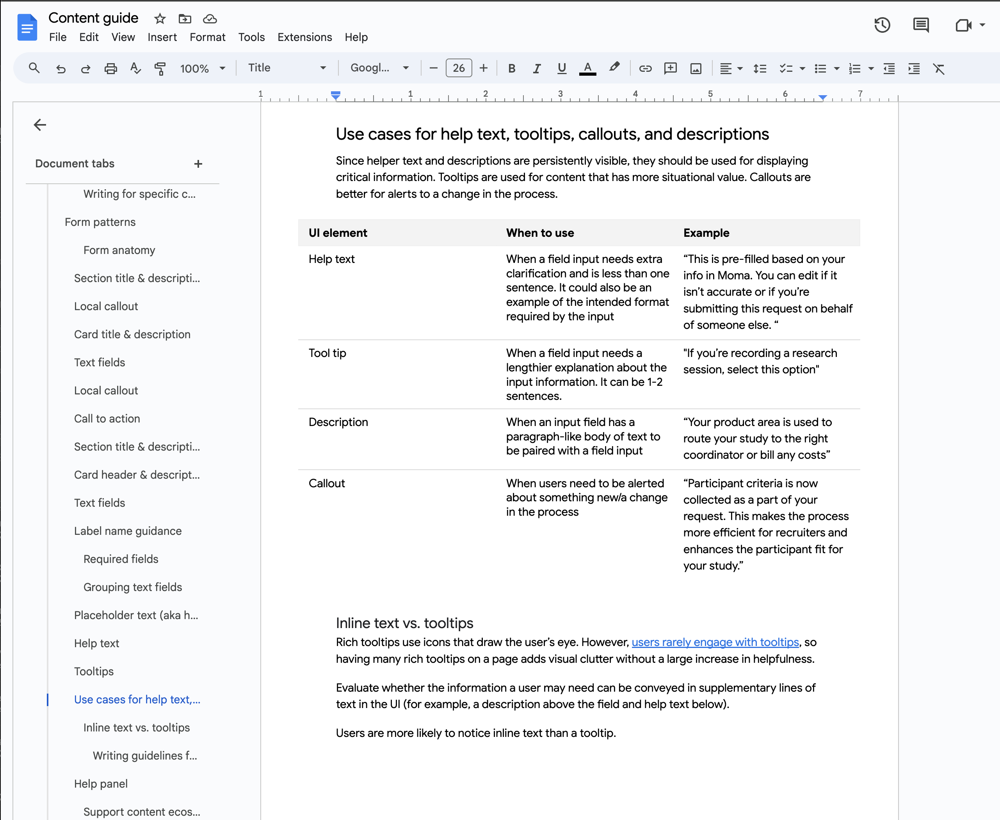

Google advances the state of the art through research, systems engineering,
and collaboration across Google publishing hundreds of research papers each year across a wide range of domains.
For almost 4 years, I've worked to improving research tooling by leading research, strategy, and product initiatives.
In that time I've overseen product and content designers, UX writers, strategists, and engineers and colaborated across cross-functional teams at Google.

Google needed help updating and replacing outdated systems to increase user adoption across the organization
The goal
Streamline research operations to standardize how research is done
General KPIs
Efficiency: cut down the amount of tools and processes
Legal: security and compliance updates
Data improvments: better utilization of AI, increasing diversity and inclusivity

User research and stakeholder workshops
Partnering with a researcher, I conducted 31 interviews with current users and stakeholders to identify the top pain points and challenges with the current suite of tools, gain clarity on key features to prioritize, and collect fresh product ideas.
Examples of questions
Tell us about your day-to-day tasks and what aspects are the most frustrating?
How would you describe the current research process in just a few words?
In your ideal world, what do you imagine your job to look like, 1 year, 5 years, 10 years from now?
Outcome
Our comprehensive deck presented qualitative and quantitative insights into user needs and pain points. We also proposed features that could be implemented quickly and those that, while requiring greater investment, would yield significant returns.
0-1 Research to design
Challenges
Many approvers: this project was high visability with many internal approvals needed, much of the work was gathering alignment across various cross-functional partners across multiple countries and timezones
Moving targets: research informed not only UX changes, but additional process changes the organization was undergoing at the same time this new tool was being introduced
Data considerations: working within design systems was constraining due to specific back-end technical limitations along with a desire for AI usage which required additional time for approvals
Compliance updates: new accesibility and legal guidlines and criteria were in active development, which took additional time for writing, design, and engineering to ensure we were meeting
Dissecting the research

Maping the user needs and journey
Lo-fidelity UX and testing
 AI improvementsBy working together effectively as content designers, writers, and engineers we created prompts and fine tuned models that were both user-friendly and technically sound, leading to a better overall user experience. We continued to A/B test results with users to ensure generated results were meeting the user needs.
Engineering and UX writing
Creating a content library to ensure consistiency
Creating a writing guide for onboarding new team members
The KPIs given were met on time. The beta version 1.0 launched 6 months from the start of the project, and it's now a fully-launched tool in active development which my team and I continue to support feature launches for.
Results
Efficiency: within 6 months of launching, we cut 36% of previous tools and 24% of previous process steps
Legal: we met the new standards outlined for new regions and countries meeting compliance goals
Data: we ensured secure data in our application and set a new standard for AI processes in internal tooling
Recieved generally positive user feedback sentiments: "This is a wonderful interface - specifically target to make the communication streams easier and quicker. Really love it, thanks for all the hard work on this"
Further improvments
To continue saving users time on other tools and processes, consider automating other parts of the research process
Make additional improvments to LLM with more recent Google updates
Test additional features with newer users to ensure usability and clarity for other audiences beyond power users